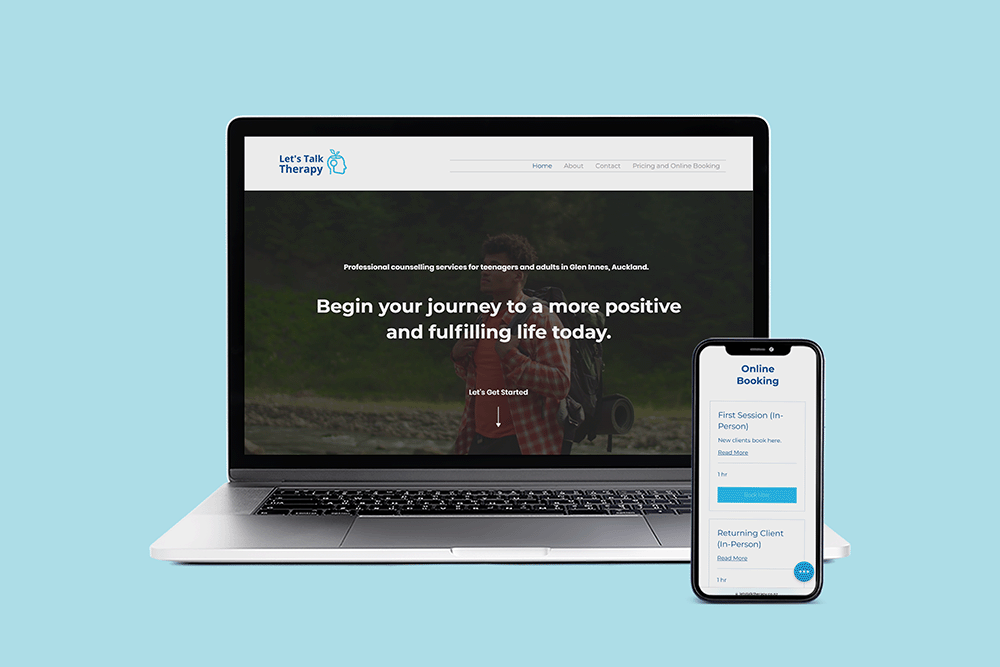

Let's Talk Therapy
Background: My client is a counsellor based in Glen Innes. We worked together to make sure that the website and branding for the business to look as professional as possible while maintaining some personal touch specified by my client.
Expertise
Web Design & Development, Logo & Branding
Year
2022




Techonogies:
Goal:
Today, the competition in mental health services is more competitive than ever, with the use of online
appointments, it is easier now than before to connect with your mental health service. Staying relevant and
top of the competition requires an outstanding customer experience –– online and offline.
I believe in creating a website that truly reflects my client's personality and values. It will make the
prospective client understands whom they're engaging with even before they begin their mental health
journey.
Process:
I determined with my client what pages and features were needed for the site to make it easier for potential
clients to understand their counsellor's personality, values, and core competencies. After we decided on the
basic attributes of the web pages, we decide on colours. The colour blue symbolises calmness and security,
and the logo is inspired by the word "growth" as our minds keep expanding, growing and learning. The use of
round shapes and flat colours is intended to catch the eye of a younger audience.
Results:
I worked very closely with my client to make sure I covered all of the technical cases they could think of, and make sure that everything could technically work throughout the checkout experience. Once I “handed off” the designs, our communication continued and my client is very happy with the results!